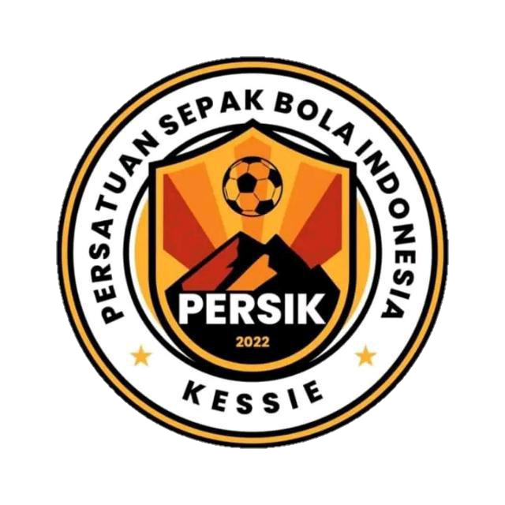
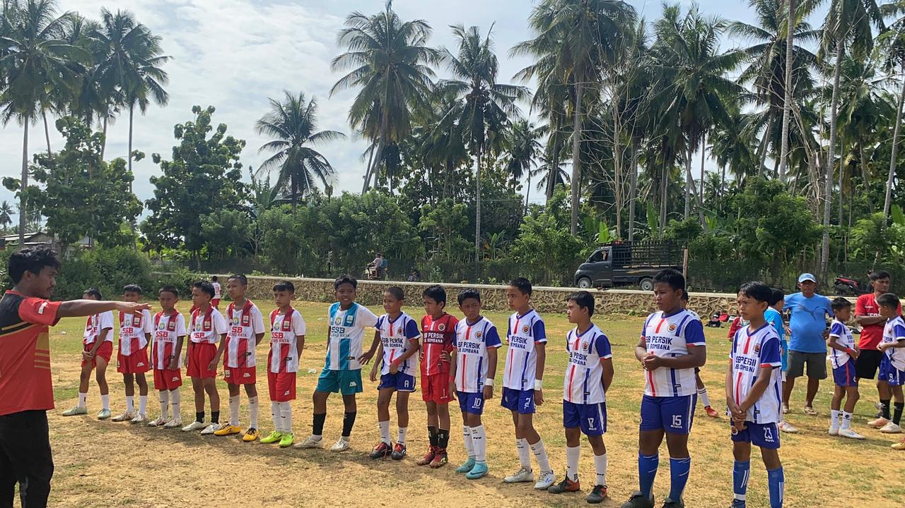
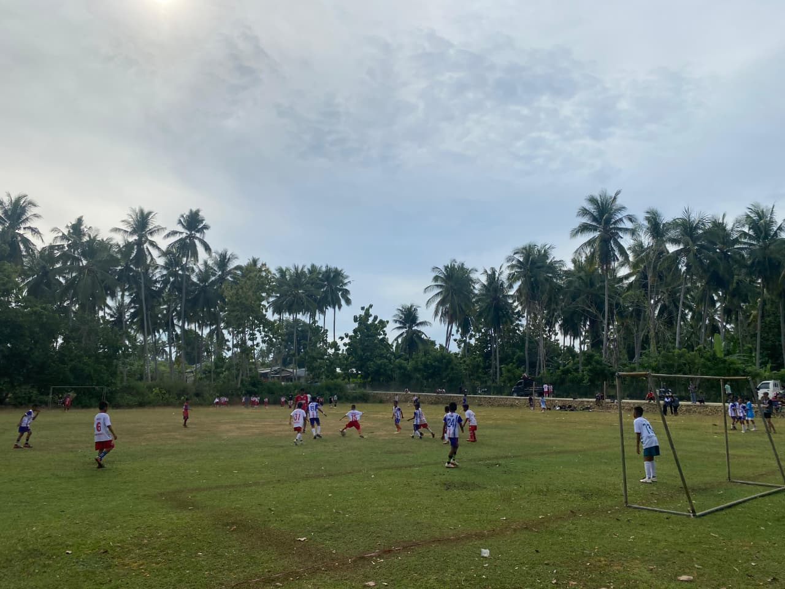
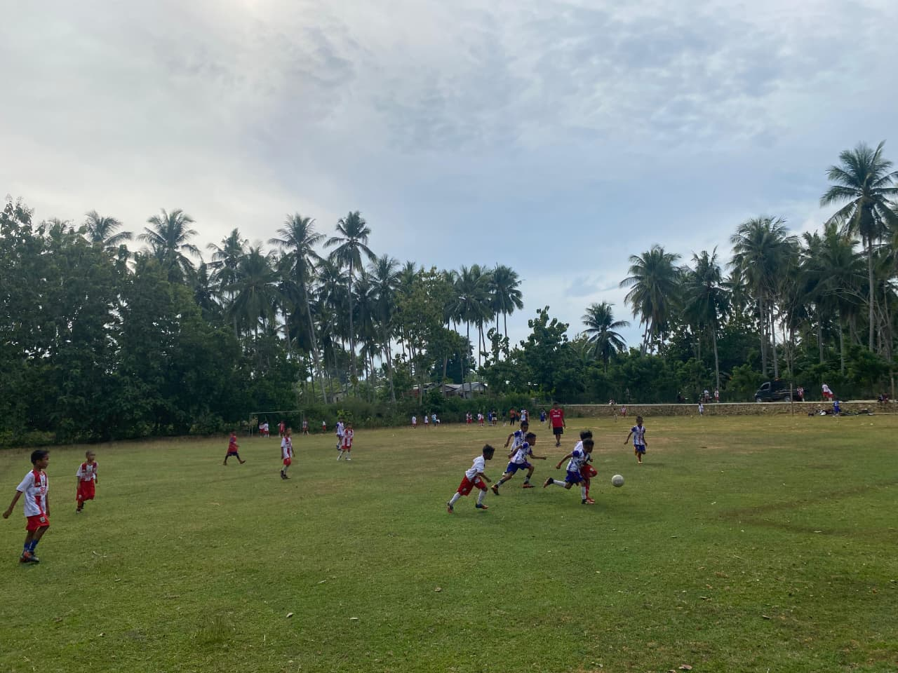
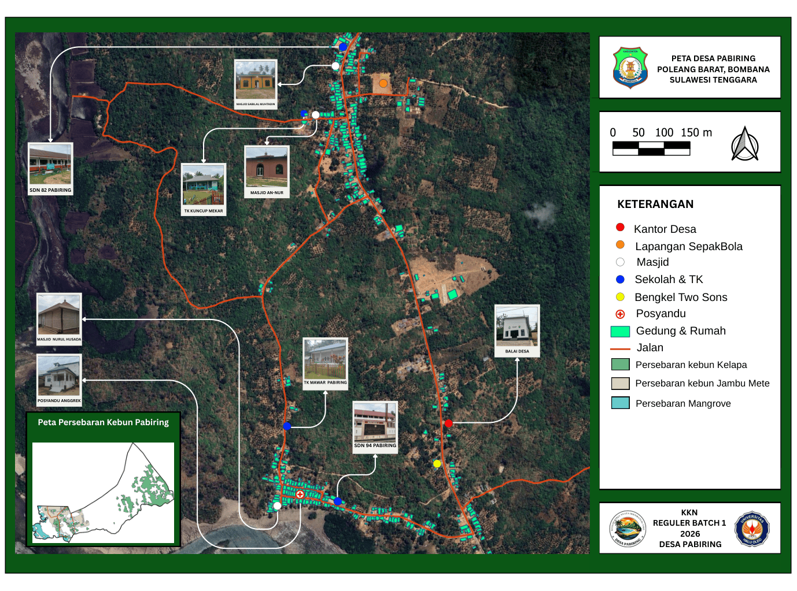
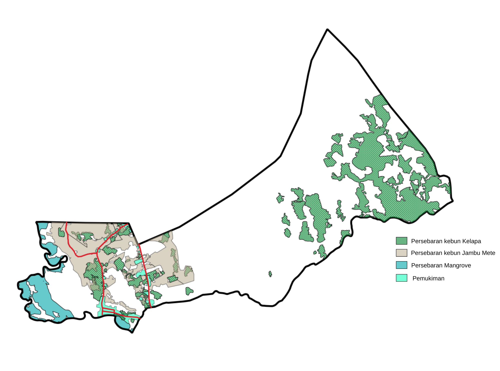

Sistem Informasi Digital Desa Pabiring
Integrasi Data Geospasial dan Profil Wilayah Poleang Barat, Kabupaten Bombana.
Profil Wilayah & Geografis
Desa Pabiring merupakan satuan wilayah administratif yang terletak di Kecamatan Poleang Barat, Kabupaten Bombana, Provinsi Sulawesi Tenggara. Secara yuridis, pembentukan desa ini dikukuhkan melalui Peraturan Daerah Nomor 6 Tahun 2007. Secara geografis, wilayah Desa Pabiring memiliki karakteristik yang unik karena memadukan bentang alam dataran rendah yang subur untuk sektor perkebunan dengan garis pantai Teluk Bone yang kaya akan sumber daya maritim.
Secara etimologi, nama "Pabiring" berakar dari kata dalam bahasa lokal "Biring" yang merujuk pada makna tepian atau pinggiran. Hal ini merefleksikan posisi desa yang berada di pesisir pantai, yang secara historis menjadi titik penting bagi aktivitas sosial dan ekonomi masyarakat setempat. Dengan luas wilayah administratif sebesar ± 12,45 Km², Desa Pabiring menaungi populasi penduduk yang dinamis dan rukun.
| Parameter Data Wilayah | Rincian Informasi Resmi |
|---|---|
| Provinsi / Kabupaten / Kecamatan | Sulawesi Tenggara / Bombana / Poleang Barat |
| Status Pembentukan Desa | Definitif (Berdasarkan Perda No. 6 Tahun 2007) |
| Estimasi Jumlah Penduduk (2024/2025) | ± 1.150 Jiwa |
| Karakteristik Topografi | Dataran Rendah, Kawasan Pesisir, dan Perbukitan |
| Jumlah Dusun Utama | 5 Dusun (Tantahi, Kessie, Taruseng, Pabiring 1, Pabiring 2) |
Struktur Ekonomi & Ketahanan Pangan
Pilar utama perekonomian masyarakat Desa Pabiring bersumber dari pengelolaan sumber daya alam yang berkelanjutan. Terdapat dua sektor fundamental yang menjadi motor penggerak ekonomi desa:
Sektor Perkebunan Unggulan
Desa Pabiring dikenal sebagai salah satu sentra penghasil Jambu Mete dan Kelapa di wilayah Poleang Barat. Kualitas tanah yang subur mendukung produktivitas hasil kebun yang memiliki nilai jual kompetitif di pasar regional maupun nasional.
Sektor Maritim & Perikanan
Pemanfaatan kekayaan laut di pesisir pantai menjadi identitas ekonomi bagi warga pesisir. Profesi nelayan berperan krusial dalam menyuplai ketersediaan protein laut segar bagi pemenuhan pangan internal maupun daerah sekitar.
Pusat Pembinaan Olahraga & Kepemudaan
Sektor kepemudaan di Desa Pabiring dipandang sebagai aset pembangunan desa di masa depan. Fokus utama pembinaan difokuskan pada cabang olahraga sepak bola sebagai sarana untuk membangun sportivitas, disiplin, dan penguatan hubungan emosional antarwarga.

Persik Kessie: Representasi Prestasi Desa
Persatuan Sepakbola Indonesia Kessie (Persik) merupakan klub utama yang membawa panji kebanggaan Desa Pabiring dalam berbagai turnamen di tingkat kabupaten. Klub ini menjadi wadah bagi atlet senior untuk menunjukkan kemampuan kompetitif dan semangat juang di lapangan hijau.
SSB PERSIK: Pusat Pengembangan Bakat Usia Dini
Sebagai bagian dari sistem regenerasi, Sekolah Sepak Bola (SSB) PERSIK didirikan untuk mengidentifikasi dan melatih talenta muda sejak dini. Didukung penuh oleh mitra strategis lokal UD. TWO SONS, SSB ini berkomitmen melahirkan bibit pemain berkualitas dengan pelatihan fisik dan taktik yang terorganisir.



Daya Tarik Ekowisata Alam
Air Terjun Wae Manrung'e
Desa Pabiring memiliki potensi ekowisata tersembunyi berupa Air Terjun Wae Manrung'e. Terletak di kawasan hutan tropis yang asri, destinasi ini menawarkan panorama air terjun alami dengan kejernihan air murni dari perbukitan. Pelestarian kawasan ini menjadi prioritas masyarakat desa guna menjaga keseimbangan ekosistem dan daya tarik wisata alam di Kabupaten Bombana.


Sistem Pemetaan Pemukiman Digital
Implementasi sistem informasi spasial menyajikan data sebaran hunian penduduk di lima dusun. Informasi ini digunakan oleh pemerintah desa sebagai landasan dalam perencanaan infrastruktur, penataan sanitasi, dan optimalisasi distribusi pelayanan publik agar lebih merata.

Analisis Spasial Potensi Agraria
Pemetaan zonasi perkebunan komoditas Kelapa dan Jambu Mete dilakukan secara digital untuk mendukung strategi ekonomi desa. Melalui integrasi data ini, pemantauan produktivitas lahan dapat dilakukan secara lebih akurat dan terencana.

Integrasi Navigasi Lokasi Global
Kanal Informasi Resmi
Pemerintah Desa Pabiring terbuka terhadap koordinasi terkait pembangunan wilayah, kunjungan wisata, dan kerja sama kemitraan.
Lokasi Kantor: Desa Pabiring, Kecamatan Poleang Barat, Kabupaten Bombana, Sulawesi Tenggara.
Media Sosial: Instagram: @desa_pabiring